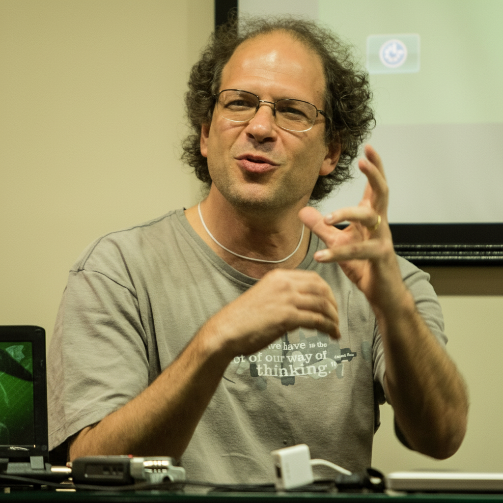

Treinador auditivo para reconhecimento e prática de intervalos musicais.
Abrir Aplicaçãoo programa treina o usuário a fazer adição e subtração de intervalos musicais
Abrir Aplicaçãoo programa analisa os parâmetros de vibrato nos diferentes sons produzidos e gravados diretamente
Abrir Aplicaçãoaplicativo que permite fazer um completo levantamento da afinação através da extensão da flauta
Abrir Aplicaçãoaplicativo gráfico que permite a simulação gráfica do funcionamento da chamada "mola maluca", Slinky, para demonstrar oscilações transversais, longitudinais e torsionais em uma "corda" inelástica
Abrir Aplicaçãoaplicativo gráfico e sonoro que permite a simulação gráfica e sonora do funcionamento de uma corda de violão
Abrir Aplicaçãoaplicativo que demonstra a série harmônica como rodas articuladas, semelhantes a engrenagens
Abrir Aplicaçãoaplicativo gráfico e sonoro que permite a geração de Sons harmônicos a partir do diagrama de Venn (teoria dos conjuntos)
Abrir AplicaçãoSimulação visual inspirada nos mecanismos de audição e processamento coclear.
Abrir Aplicaçãoa partir do modelo fonte-filtro, o programa permite sintetizar vozes com diferentes frequências fundamentais, formantes, características e mesmo simular o formante do cantor
Abrir AplicaçãoSimulação da interação entre o arco e a corda em instrumento friccionado, baseado no modelo de Helmholtz
Abrir AplicaçãoRepresentação da Curvas de Munson de mesma audiabilidade, que podem ser escutadas ao percorrer com o mouse
Abrir Aplicaçãoinstrumento virtual que se inspira na cítara e que permite a geração de escalas diatônicas em diferentes modos e temperamentos
Abrir Aplicaçãoaplicativo gráfico que permite a extração de partes de uma partitura em formatos PDF e outros, para execução musical e pesquisa
Abrir Aplicação